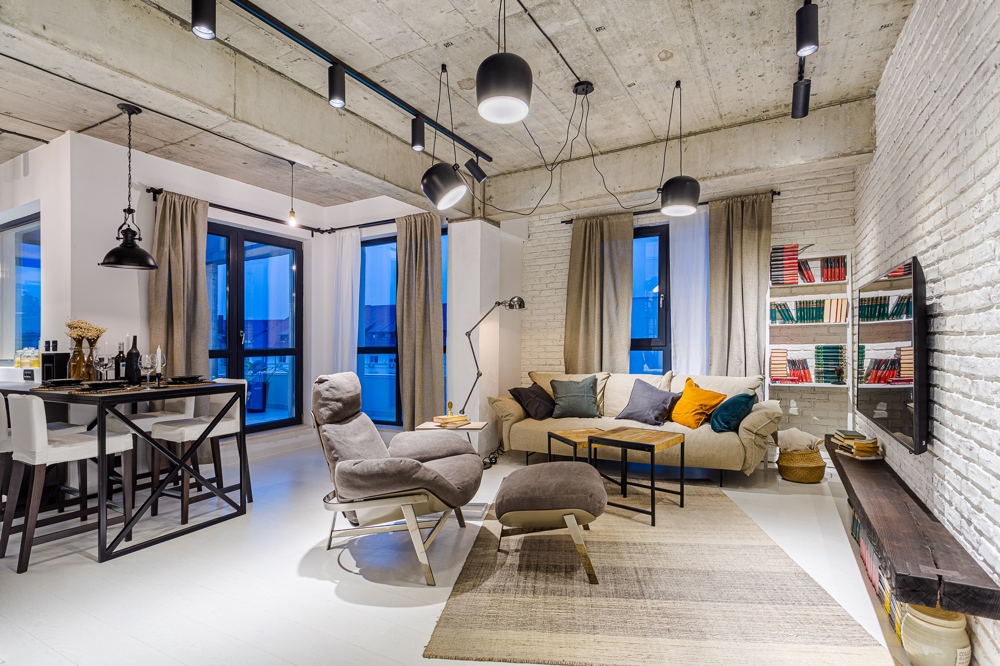

Stilul Industrial
Stilul industrial nu a fost inventat de vreun designer nonconformist si nici nu a aparut ca o reactie la alte curente estetice, ci s-a format in timp, incepand cu sfarsitul anilor ‘60, incercand sa raspunda unor nevoi concrete ale societatii. Numeroase fabrici si depozite din Europa si Statele Unite au fost inchise in deceniile sapte, opt si noua ale secolului trecut, odata cu modernizarea economica si dezvoltarea consumerismului, iar multi oameni au descoperit in aceste spatii parasite o solutie excelenta pentru problema locuintelor.
Noii locatari si-au dat seama ca nu mai pot aplica regulile amenajarilor interioare clasice in aceste spatii brute, nefinisate. In acelasi timp, au incercat sa pastreze si sa puna in valoare caracteristicile cladirilor vechi, multe dintre ele avand o estetica aparte, valoroasa pentru patrimoniul cultural al oraselor. Astfel s-a format un stil de design interior autentic, care confera farmec chiar si celor mai inestetice elemente ale unui spatiu.
In anii 2000, stilul industrial a devenit tot mai popular datorita asocierii cu o practica arhitecturala din ce in mai folosita: reutilizarea adaptiva a cladirilor cu valoare istorica. Caracteristicile aparte ale acestui stil ne permit sa ne bucuram de confort fara sa distrugem particularitatile unei locuinte vechi, expunandu-i elementele structurale, precum zidaria, tevile si stalpii intr-o maniera functionala, simpla si foarte chic. Bineinteles, stilul industrial nu este rezervat exclusiv locatarilor cladirilor fostelor fabrici, ci tuturor celor care-si doresc un decor creativ, modern si, in acelasi timp, insufletit de nostalgia unei alte epoci.
Caracteristicile stilului industrial si cum creezi un decor industrial
Cum poti obtine un decor industrial in caminul tau? Incearca sa tii cont de caracteristicile acestui stil si sa le adaptezi spatiului pe care vrei sa-l amenajezi.
Opteaza pentru cat mai mult spatiu deschis
In mod normal, ai fi tentat sa acoperi toata zidaria, tevile si conductele, dar daca esti atras de stilul industrial, atunci pregateste-te sa expui tot ceea ce inseamna elemente structurale si sa le integrezi pur si simplu in decor. Asta inseamna ca vei lasa la vedere tevile din metal, peretii din caramida si suprafetele din beton sau lemn. De altfel, lemnul, metalul si caramida sunt materialele care se identifica cel mai bine cu acest stil de amenajare, amintind de menirea originala a vechilor fabrici.
La inceput, pionierii decorului industrial au optat pentru expunerea elementelor structurale din ratiuni exclusiv practice, pentru ca ar fi fost prea costisitor sa le ascunda. Astazi, insa, necesitatea a devenit trasatura definitorie si una dintre principalele caracteristici ale stilului.
Expune elementele structurale
Initial, reconversia spatiilor industriale s-a facut fara a configura intr-un anumit fel interiorul cladirilor. Suprafetele deschise s-au pastrat in mare masura, iar locatarii au descoperit ca pot defini usor diverse zone ale locuintei cu ajutorul pieselor de mobilier, a covoarelor, a paravanelor si a peretilor despartitori decorativi.
Caracteristica open space s-a pastrat pana astazi si este una definitorie pentru stilul industrial. Daca vrei sa obtii un astfel de decor intr-un apartament clasic de bloc, incearca sa reconfigurezi spatiul prin daramarea unui perete intre living, bucatarie si/sau hol, dar nu uita sa obtii inainte avizul autorității locale.
Evidentiaza particularitatile spatiului
Orice detaliu original al arhitecturii locuintei tale poate fi folosit pentru a conferi personalitate spatiului: ferestrele cu arcada nu se vor acoperi cu perdele, peretii din caramida se vor lasa expusi, scara din beton nu va fi placata cu marmura sau alte finisaje si asa mai departe. Acolo unde este nevoie de accentuarea esteticii originale, foloseste-te de lumini si de geometrie pentru a orienta privirea catre detaliile pe care vrei sa le scoti in evidenta.
Daca luam exemplul unor ferestre cu arcada, inseamna ca ai putea atrage privirea spre forma acestora folosind o combinatie de corpuri de iluminat cu design inedit pe tavan si niste obiecte decorative in forma de triunghi cu varful in sus pe pervaz.
Evidentiaza particularitatile spatiului
In timpul revolutiei industriale, materialele precum lemnul, fierul si otelul erau frecvent folosite in constructia fabricilor, si exact pe aceste materiale se va baza si decorul modern industrial al livingului sau dormitorului tau. Vei vedea ca intre fier si lemn exista o armonie irezistibila a contrastelor, si chiar daca locuinta ta duce lipsa de detalii neobisnuite precum cele enumerate mai sus, tot poti pune la punct un decor industrial folosind o combinatie creativa de elemente din aceste doua materiale.
Foloseste culori neutre
Urmand specificul celor doua materiale definitorii pentru acest stil, paleta cromatica tinde spre nuantele neutre calde, spre marouri, taupe (o combinatie de gri si maro), griuri, culori metalice (mai mult cupru, mai putin auriu sau argintiu), caramiziu, alb si negru. Totusi, pentru a revitaliza spatiul si a-i da un aer primitor, poti adauga accente de culori intense, in functie de preferintele tale: albastru deschis, verde pajiste, rosu intens sau portocaliu luminos.
Obiecte specifice stilului industrial
Asa cum spuneam mai sus, stilul industrial este foarte usor de obtinut in orice tip de locuinta, atata timp cat ii respecti elementele specifice. O oarecare dificultate apare atunci cand noul tau apartament arata impecabil – nu are niciun perete de caramida expus, iar toate tevile sunt bine camuflate. Cum obtii decorul industrial in acest caz?
Raspunsul este urmatorul: cu ajutorul mobilierului al carui design mizeaza pe lemn, fier, otel si forme brute, nefinisate. Il recunosti usor, dupa materialele din care este realizat, dupa lipsa ornamentelor si dupa detaliile aparent bizare, specifice inventiilor secolului XIX: o roata zimtata cu pedala, rafturi cu coturi din teava sudata, picioare de scaun cu aspect de lanturi, bufeturi sau dulapuri de spiterie.
Piese de mobilier reprezentative
Seiful metalic
Aproape omniprezent in povestirile secolului XIX ale lui sir Arthur Conan Doyle, seiful este specific unei perioade de competitie economica acerba. Fara un seif, nicio companie nu-si putea pastra in siguranta patentele noilor inventii, banii sau hartiile valoroase care ii garantau supravietuirea. Seiful a fost printre cele mai vandute obiecte in timpul Revolutiei industriale, si a ramas un element de referinta al decorului industrial si in ziua de astazi. Bineinteles, cu mentiunea ca acum indeplineste mai degraba un scop pur decorativ.
Ceasurile de masa sau de perete
Intr-o epoca in care punctualitatea era foarte apreciata, ceasurile jucau un rol deosebit de important in decorul oricarei case sau in amenajarea oricarei hale de fabrica. Gasesti numeroase modele de ceasuri tipice acestei perioade a Revolutiei industriale, dar cel mai usor este sa te orientezi catre cele din fier si sticla, cu cifre romane sau un aspect antichizat.
Lampa cu design Dugdill
John Dugdill a fost un inginer electrician britanic care a inventat o lampa cu design rotativ in 1906, al carei brat ajustabil din teava putea fi adaptat in mai multe pozitii. Gasesti astazi o multime de astfel de modele de lampi din inox, ideale pentru un decor industrial.
Scaune metalice cu picioare concave
Usor de stivuit si foarte usoare, scaunele cu picioare concave din metal au devenit rapid reprezentative pentru perioada post-industriala, facand parte din decorul cafenelelor si teraselor de pe Riviera Franceza. Sunt ideale in bucatariile amenajate in stil industrial.
Stilul steampunk, un design industrial de o eleganta gotica
Stilul steampunk poate fi definit ca un stil industrial combinat cu elemente gotice. Are o eleganta deosebita, construita cu ajutorul unor scheme cromatice axate pe tonuri metalice de cupru si bronz, pe nuante de albastru inchis si pe texturi sofisticate de piele si catifea. Lemnul de culoare intunecata este caracteristic acestui stil de design interior, la fel si detaliile care amintesc de inventiile perioadei Revolutiei industriale.
De exemplu, un living decorat in stil steampunk imbina elementele structurale expuse vederii, precum peretele din caramida, cu mobilierul din lemn cu aspect antichizat si cu ornamentele din metal partial nefinisat. Poti adauga intr-o astfel de amenajare perne vintage al caror imprimeu infatiseaza o harta veche a lumii, sau chiar un bar de sticle in forma de glob pamantesc.
Sugestii de amenajare in stil industrial pentru living, dormitor si bucatarie
Living in stil industrial
- Pentru un dormitor in stil industrial, iti recomandam ori un pat cu bare de metal, ori unul pe o structura din lemn cu aspect nefinisat, cat mai scund.
- Evita tapiteriile in culori puternice, in favoarea celor in nuante neutre.
- Adauga drept spatiu de depozitare un cufar din lemn mindi lacuit si fier, in locul unei comode clasice, una sau doua noptiere metalice pe roti, iar peretii ii poti decora cu seturi de fotografii alb negru.
- Veioza de pe noptiera poate fi una tipica designului industrial, cu brat ajustabil tip Dugdill, iar covorul potrivit este unul monocrom, fara imprimeu, intr-o nuanta contrastanta cu cea a podelei.
Bucatarie in stil industrial
- Bucataria in stil industrial e caracterizata de dulapurile deschise sau cu usi din geam, de rafturile cu tevi de metal fixate pe perete si suporturile suspendate pentru tigai.
- Masa din lemn si scaunele cu picioare concave sau a caror structura include lemn si metal sunt cele mai potrivite.
- Asigura suficienta lumina cu ajutorul corpurilor de iluminat cu becuri in stil Edison si adauga prospetime decorului cu cateva ghivece de plante.
- Nu vei da gres nici daca incluzi in decor scaune de bar, o tabla de scris pentru perete sau obiecte in care se regasesc combinatii de texturi diferite, precum lemn si tapiterie din piele. Joaca-te cu nuantele neutre, incearca sa asiguri incaperii cat mai multa lumina naturala si evita decoratiunile prea ornamentate. 
Extrem de usor de aplicat chiar si in spatiile mici, stilul industrial este o optiune adecvata pentru orice buget. Atata vreme cat pui accentul pe materialele naturale si pe expunerea particularitatilor spatiului, poti obtine aerul industrial doar cu ajutorul catorva elemente de mobilier.
Stilul nu pune probleme de asortare, datorita preferintei pentru nuantele neutre, dar nici nu te restrictioneaza in sfera acestora, dandu-ti libertatea de a integra in decor culorile preferate ca elemente de accent. Intr-o astfel de amenajare se potrivesc atat piesele de mobilier cu aspect mecanic, cat si cele simple, care au cat mai putine detalii decorative, in culori neutre (alb, negru, maro, gri).
Daca vrei sa renovezi o incapere moderna, minimalista sau rustica, dandu-i un aspect industrial, nu trebuie decat sa adaugi cateva dintre elementele de mobilier specifice in decor si sa incerci sa te inspiri din caracteristicile stilului cand alegi schema cromatica. Nu e nevoie de modificari majore, si asta face din stilul industrial unul extrem de sic, accesibil si popular in toata lumea.